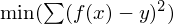

ref:http://www.ats.ucla.edu/stat/dae/
本着这两方面的问题，我进行展开。
首先问什么使用Robust Regression，在我们采集到的样本中经常会出现一下奇异点， 就是数值突然特别大或者特别小，很大的影响了我们的回归模型，这种情况下， 我们通常的做法是进行判断是否是影响很大的奇异点，如果是那么我们会将奇异点删除，然后再做线性回归。 但是存在这样的问题，这些点是正常的样本点，它也是反映总体的一下性质。这个时候就用到了robust regression。
我们知道regression的做法是用最新二乘法来实现残差的平方和最小 ， 那么robust regression的做法是将差别比较大的残差值加一个weight，减小其影响。从而整体上降低了模型残差平方和。
#robust regression
require(MASS)
require(foreign)
cdata <- read.dta("http://www.ats.ucla.edu/stat/data/crime.dta")
head(cdata)
nrow(cdata)
summary(ols <- lm(crime~poverty+single,data=cdata))
opar <- par(mfrow=c(2,2), oma=c(0,0,1.1,0))
plot(ols, las=1)
cdata[c(9,25,51), 1:2]
ccdata <- cbind(cdata, res=ols$resid)
ccdata <- ccdata[order(abs(ccdata$res)),]
tail(ccdata)
olsr <- rlm(crime~poverty+single, data=cdata)
cddata <- cbind(cdata, res1=ols$resid, res2=olsr$resid)
cddata <- cddata[order(abs(cddata$res1)),]
tail(cddata)
summary(olsr); summary(ols)
Notes
opar <- par(mfrow=c(2,2), oma=c(0,0,1.1,0)) plot(ols, las=1)比较好用，可以执行看到差异比较大的点。
{kind=link}